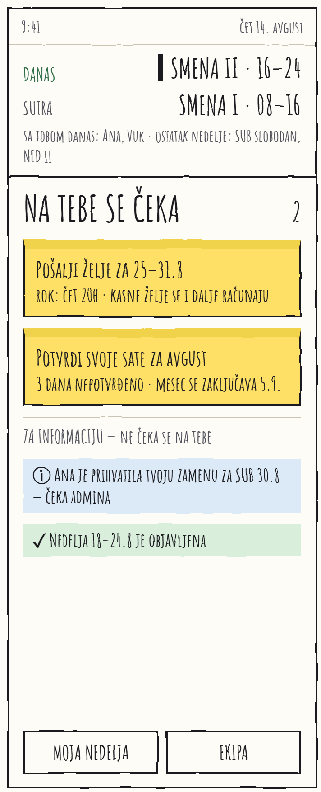
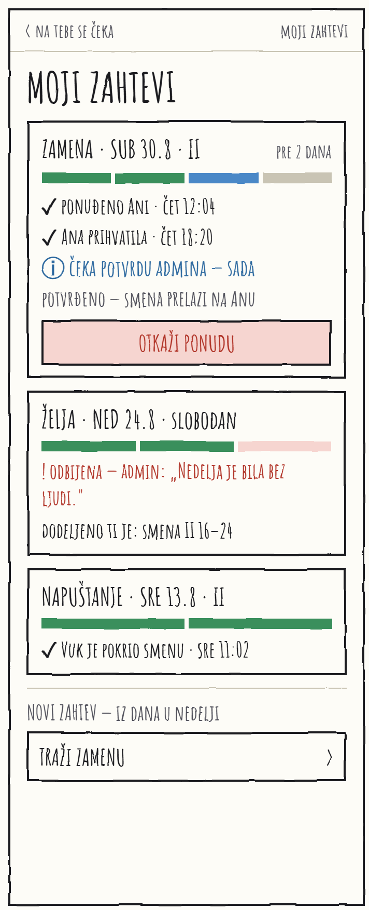
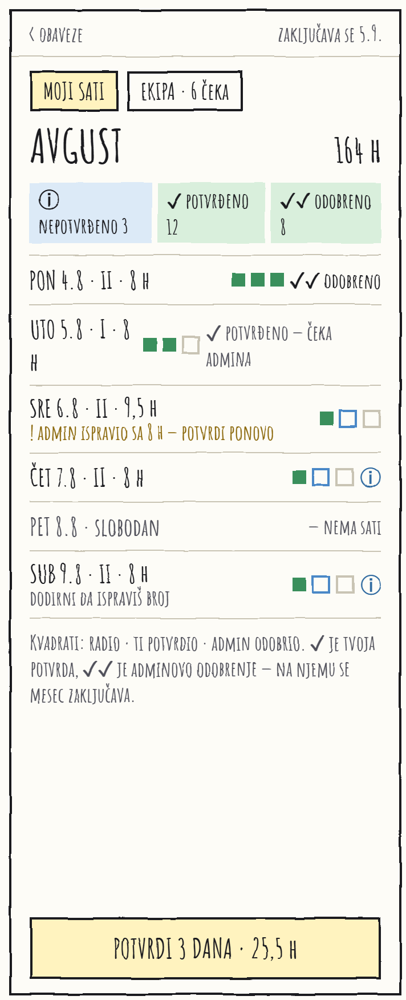

Smenager
Sole developer · React Native and Convex · 16 shipped cycles
Small venue teams in Serbia run their rota in a Viber group. Someone pins a photo of the schedule, someone else asks to swap Saturday, and by Thursday nobody is sure which photo is current. Smenager replaces that with one live weekly schedule and a real channel for shift wishes.
The workflow is deliberately narrow. An admin composes a week, workers file their wishes for it, publishing turns the draft into truth, and after that the schedule only moves through swaps and shift drops. Every one of those moves leaves a record and sends the right push to the right people.



Parts I would show a reviewer
- Structure gets drawn before it gets built. Those three screens are proposals, not shipped work. One flow, three moments, so the argument about where a worker's obligations live happens on paper instead of costing a cycle.
- A deterministic auto-draft planner. Fill an empty week in one tap. It works down a strict priority hierarchy and then runs exact repair sweeps, so the same input always produces the same rota and an admin can argue with the result instead of guessing at it.
- Swaps that respect what people actually trade. A day off is a first class thing to swap, not the absence of a shift, so two people can exchange a Saturday shift for a Tuesday off and the grid stays consistent on both days. The middle screen is where a worker watches one land: sent, seen, decided, outcome, with the admin's reason attached to a rejection.
- Ops switches with no redeploy. The auto-draft, the work roles feature, self-serve team creation and the free-plan seat cap are all environment flags. If the planner misbehaves during a pilot, one command hides the button and blocks the mutation.
- Documented decisions. 28 ADRs and one glossary that maps the Serbian domain words to the tables and modules holding them. The code is in English, the product speaks Serbian, and the mapping is written down rather than remembered.
- Scale
- ~32k lines of TypeScript, 212 test files
- Method
- Shape Up
- Delivery
- EAS builds, OTA updates on every master push that touches app JS
smenager.vercel.app Source is private. Happy to walk through it on a call.